BEAR LAKE UPDATE — Manistee County, Michigan
Feb
'22 to Feb '23
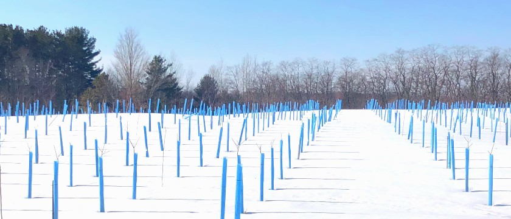
To make a pond: We are playing the patient game in letting the pond come together. Early
2022 was a lesson in watching the water level go to 4' deep…only to go back to 6" and then
to mud over time. Since late summer it's been holding well at 2-3', which makes me wonder if
the clay just needed time to settle in and create a more moisture proof layer or not. My
middle son, Andrew, is at a monastery in eastern PA, where they just put in a reflection
pond. To do so, they put in a fairly thick pond liner and with about 30 guys, pulled it into
position. The price tag on that (somewhat paradoxically) seems pretty high for me and my
"luxury goal". The current price would be north of 30k for our application…so, I am thinking
to wait before I demonstrate to myself that I am that desperate.
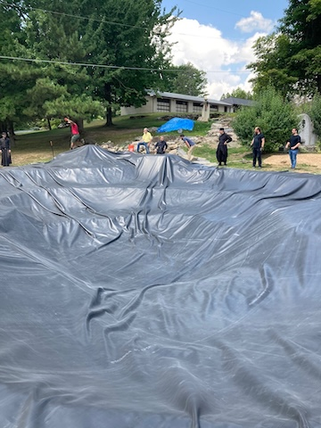
Another option could be to
line the pond with 2" of Bentonite, and while the material cost would be less--that's also
on the pricey side and far from easy to apply. On top of the 2" layer of Bentonite you are
supposed to add another layer of soil to hold it in place. Once it moistens up thoroughly,
it is supposed to lock water transmission through the base of the pond.
Planting: We lined out a good variety and quantity of shrubs—Black Elderberry, Beaked
Hazelnut, Musclewood, somewhat to add cover but mostly for eventual seed production to help
us get a better supply of seed for the nursery. If you hunt deer and are managing your
property for this purpose, it's important to keep in mind what I will be writing next. One
of the costs of pruning up trees for better timber quality is that the woods can thin out a
lot. So, you need to balance your priorities to see where you come out on the scale. Does
better timber come out on top? Cut and trim away! Quality bedding areas needed? Then at
least you will want to leave some areas untouched, so you preserve your sanctuary areas.
Want to prioritize both? Then just trim up the very best trees.
If you do thin your woods, or they are just getting that way naturally, there are some shade
tolerant shrubs and conifers that will give you some additional cover and tolerate
partial-mostly shade that can remedy that problem—in terms of the woods being less wildlife
friendly as a result. Conifers such as Canadian Hemlock, White Cedar, Black Spruce and White
Pine will do quite well in a partially shaded area, giving you some cover and filling in the
woods a bit. Shrubs or small trees like Beaked Hazelnut, Musclewood, Witchhazel,
Thimbleberry, Pagoda Dogwood, Roundleaf Dogwood can handle some shade and add variety as
well as food sources in the native woodland. For deciduous trees that can tolerate a lot of
shade, think about American Beech and Hophornbeam. For the edge of a woodland that is well
drained and offers 50% sun/shade, Dwarf Bush Honeysuckle, Snowberry, Elderberry, Ninebark
are good choices.
Deer hunting in 2022 was slooooow. No deer shot on the property and just a bit confounding
as we have made decent progress on food plots, establishment of a 2-3 acre Switch Grass area
and our 7000 newly planted trees are starting to fill in a bit so there's a bit more
security/cover
both in the front and back of our property. On the flip side, our wholehearted effort to
thin and trim up the mature woodlands has left us with a bit of an open feel and I think the
deer have taken notice. I'm sure there are some deer that bed on our property but most deer
that feed on our property do in fact bed on the adjacent properties. Our shade
tolerant/recently planted conifers are beginning to have an impact but they are definitely
only in the beginning steps…so, in reality…not too much.
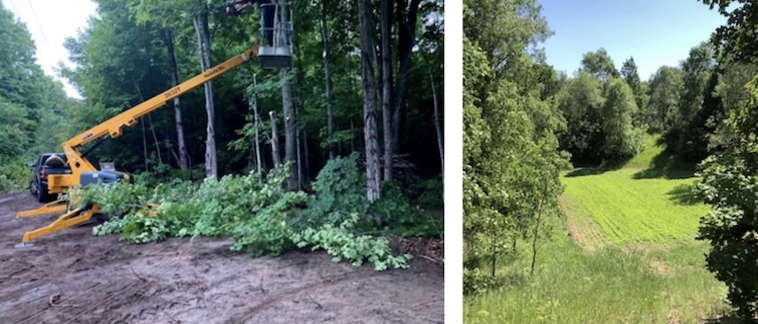
Trimming mature trees: Our work continues each winter with our Timber Improvement Program. I
take two guys up for 3 days and we do that 3-4 times over the winter. My job is to move
through each area first, removing undesirable species and thinning out the desirable ones to
promote the growth of high-quality, naturally occurring timber—specifically Sugar Maple and
Black Cherry on our property. The guys follow with their 20'
extension pole—manual saws, trimming up to 25'. Of course, this is a process and priority
not understood by all. As even a logger, who was harvesting a property next to ours said,
"couldn't figure out what they were doing over there."
Insect problem update—Gypsy moth and Japanese beetle. We did not have a repeat of the Gypsy
Moth infestation in summer 2022. Japanese Beetles however were quite a different story.
Spraying insecticides regularly over a larger area was quite a bit of work. So, I bought the
standard Japanese Beetle traps and hung 4 sets of 2 around the property. Each one of these
can hold up to 4000 JBs when full. I replaced them as needed and in total took down 26 traps
by the end of summer…and yes, that means over 100,000 of those pests were exterminated!
Wow—I never would have guessed there could be so many in Northern Michigan. SCARY!
Controlling invasive…plants: If we had only invasive insects to deal with…but alas,
Autumn
Olive (exceptionally well represented), Tatarian Honeysuckle, Red Barberry, Garlic Mustard
were present when we bought the property in 2017. While it's now a much-reduced threat to
re-establishing a native plant property, we do regular canvassing and spraying to counteract
the insurgents. I've switched from "Crossbow" to "Garlon 4" this year as the main herbicide.
I add 8 ounces of liquid nitrogen fertilizer to a 4 gallon backpack sprayer together with 12
ounces of Crop Oil to spray the foliage of the nasties. I'm very much liking the results and
will continue with this program. If the stem caliper is over 1", then I think it's better to
cut and paint the stump with Roundup…but…unless there are a lot of them, it can be
painstaking to do that over an 80 acre parcel.
2022 was a busy year—with a focus on better growing on what we had already planted.
As I believe I may have mentioned in one of my earlier updates, our choice to use a 1"x 1"x
60" pointed oak stake for securing tree tubes was a bad one! It was right
hearted—"Let's
keep the chemicals used in treated lumber off our property!"--but wrongheaded as even
though our property is comparably dry, we saw the stakes rot through within 3-4 years after
planting on account of the shredded bark put at the base of the plants. The resulting
problem was that since trees don't develop good stem-wall strength in a tube, the weight of
the stake when it breaks, pulls over the tube and seedling together with it when it fails.
Not a small problem since every time that happens, we need to go through and replace a
stake and re-attach to the tube/tree. That's very time-consuming and we've had as many as
750 blow over after one strong wind event. If we had only used 5/16" fiberglass stakes 6'
tall instead…oh my—I could have caught a lot more bass out of my kayak!
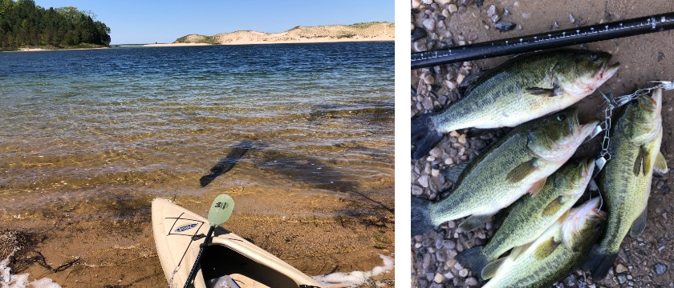
Bats: I would say that for the most part, the bats are still winning. They've moved around
in the barn and though I've pretty thoroughly sealed off their roosting places, they just
moved over a bit where it's not quite as dark. They've put up with that inconvenience pretty
well. Haven't moved on this idea yet but I think some really bright lights strategically
placed in the barn during the day may be my next, best idea to keep the guano from piling up
too high on the floor.
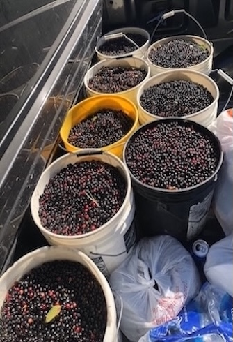
Seed Collection: Overall, kind of a fruitless year in respect to harvesting seed. Hard to
remember all the factors, which may have limited success but there was a very dry start to
summer. We had to water our planted trees many times from May through July. It was so dry we
lost nearly all of our raspberries (didn't water those). Watering is very time consuming and
therefore expensive…but better than replanting. It finally started to rain in August and we
ended up with almost 11" of rain in that month alone. If that wasn't a record, it was close.
September was good and the food plots came in very well. The one bright spot for seed
production this year was a bumper year for Black Cherry (Prunus serotina) seed. We picked on
several days over several weeks and ended up with over 150# of clean seed. That should be
enough to last several years. Where possible, we prefer to collect our own seed but as you
can imagine when you grow over 200 species—that doesn't work out completely. The best thing
we can do then to minimize that problem is to make a big collection of seeds (the species
that store well) when there is a bumper crop so you only need to collect some species once
every 5 years or so. We also picked a minimal amount of White Cedar this year.
Fertilization: As mentioned in the previous 'Bear Lake Update' we are trying to fertilize
our 7000 out-planted seedlings regularly. With the early season drought we had to forgo
fertilization as it would only have added more stress (salts) to the thirsty plants. I'm
glad we didn't fertilize as we didn't lose too many plants…and growth, though embarrassingly
little, was still better than none at all.
So, now it's (much later than) February 8, the year of our Lord, 2023 as was the standard
way of referring to time—not very long ago….as I have worked on but not completed this
update…and now it's 2025! Oh well, I'll get this one posted as soon as I can.
So, that's all for now on the updates. I hope you enjoyed it, maybe learned from it and if
you want to drop me a line with your comments…just send one to info@alphanurseries.com. I
will always appreciate hearing from you!!
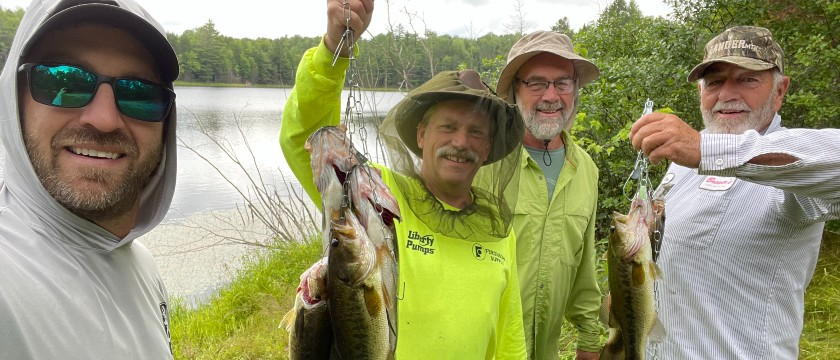
BEAR LAKE UPDATE — Manistee County, Michigan
May
'20 to Jan '22
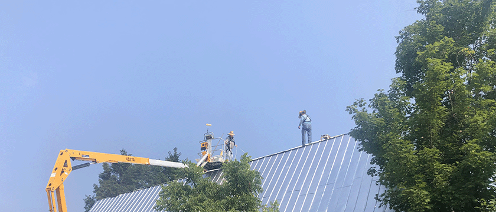
Having dug a pond the year before, we finally worked out a deal for someone to deliver clay
and line the pond with it.
A good red clay…but not the blue clay I had hoped to locate. They applied 550 yards, about
4-5" thick. If you remember a 3-4" rain in mid-late September—this caused the pond to fill
up to a 4' depth. The joy of that was short-lived as we saw it gradually go down and finally
settle at about 12"… then disappear altogether. Not sure if that means that we are going to
need twice as much clay…or if it just has to settle, but at a minimum, extra time will be
needed (and probably some more $$ this summer).
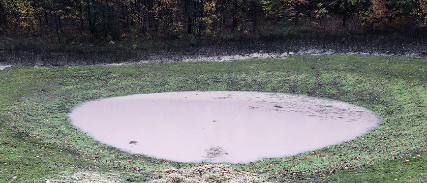
For deer hunting in 2020, we established a new food plot down in a protected valley.
There were blackberries growing there and I disced that about 5 times over the summer
before the roots were gone... and the persistent canes finally gave up. I planted it in
turnips and soybeans in late August. Soybeans were a waste of money, but the turnips
came up great and they were soon discovered and appreciated by the deer. That little
honey hole was productive for me as I shot a 9 point with my crossbow and a 5 point with
my 30-06. A good return on investment! I think I need to give that spot to my Dad next
year. 😊
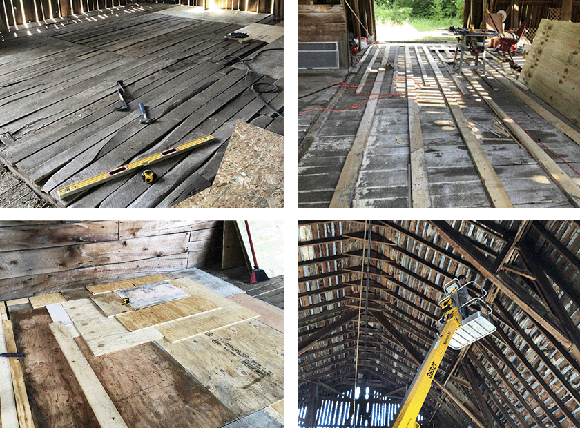
What else? The dog days of summer got us thinking about improvements we could make
indoors, so we decided to put a new floor on the main floor of the barn. This became
quite an undertaking as the floor varied up to 6" in height due to settling. The
supporting timbers were giving way and probably not being built all that level to
start with. I cannot tell you how many sheets of plywood we used in that 40 x 60'
barn, but I'm going to guess around 200…Luan board, ½ inch OSB, CDX grade ¾" for
underlayment, finish ¾" grade for the surface. Add to that, hundreds of feet of 2x4,
2x6 to fill in the bigger gaps... it was quite an endeavor. But again, persistence
is what's needed and you figure it out as you go. 3 guys working for three 3 weeks
was about what it took in labor. We enjoy building and transforming the barn into a
safe place again; there were a lot of holes caused by leaks in the roof. The
neighbors even used the barn as their wedding venue last fall! At least with the
floor improvement the dancing should also be improved!
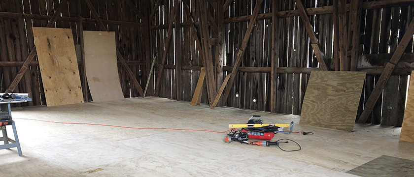
Trimming mature trees: This has taken two forms. The first, motivated primarily
to limit the amount of shade spreading over our newly planted areas. A lot of
these areas are surrounded by 60-80' Sugar Maples. They extended out from their
trunk up to 35' over the field. We trimmed back to the trunk and then trimmed up
as high as we could, using a tow behind 37' battery operated hydraulic lift.
While we were cutting back those branches, we also could get into the woods to
do quality improvement by de-limbing the trees that were off the edge (so I
could trim about 30' off the trail into the woods). Having completed that
perimeter work in the summer of 2020, round two came in the fall/winter as we
had some available time to work on what I would consider to be "timber
improvement". It didn't really differ from what I was doing on the edge of the
new plantings but the purpose was to create as many clear logs as possible for
harvest some 20-40 years down the road.
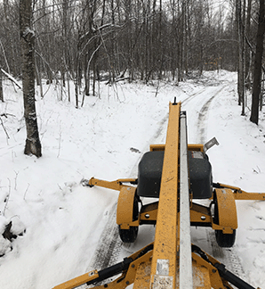
To do this, I again employed the hydraulic lift and went to work wherever there
was access into the woods—two tracks, meadow edges, sometimes cutting out small
trees to pull the lift into position. I spent about 5-7 days doing this sort of
work. Since I was pulling the lift with a pickup, there was limited access. I
expect to do this again in years to come, where I can use a tractor to get into
some tighter corners.
While I was doing this, I took two of my guys up and we tested two saws. One, a
20' extendable manual pole saw manufactured by "Silky", a Japanese firm; it
allowed us to go through the woods and trim up to 25'. We chose better formed
trees—mostly sugar maple, some black Cherry and the occasional oak. We skipped
Basswood, Beech, Hophornbeam and Elm.
We also tried using a battery powered chain polesaw, which has a very small
bar—roughly 8" and extends to about 12'. This purchase has not worked out too
well. It doesn't seem to have the required torque, the battery runs out too soon
and the guys who used both said they definitely preferred the Silky manual saw.
The manual saw cuts one way, but with about 4 strokes you can cut through a 1"
diameter limb. Some complaining about a sore neck, sore arms and general
tiredness, so this is a task best assigned to younger workers or best to limit
activity to 8 hours a day.
During my final winter trip up in January 2021, I was working with the lift but
got it stuck so changed courses and began trimming up well formed trees with the
chainsaw, getting ahead of the guys who were working with the extension saws.
This worked out well for a couple reasons—first, the guys with the manual saws
didn't need to trim lower branches, which made their work more efficient and
secondly, I could tell them to only trim the trees that I had trimmed…thus
reducing the time they would need to make decisions themselves.
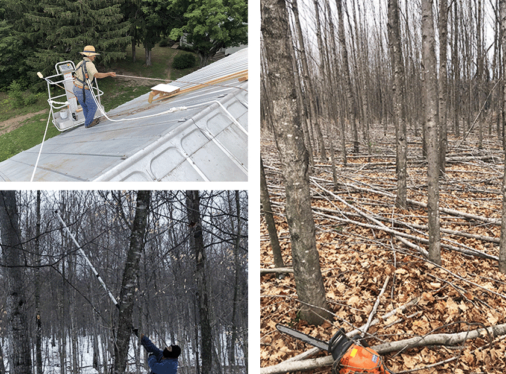
2021 was a busy year with lots of trips to the
property.
Often we need an event to focus our energies and preparation--such was the case
with the restoration of the barn…built sometime in the 40s? As mentioned above,
we took care of the floor first. The roof was in need of repair, as well as some
serious leaks on the south side. The leaks were due to some tearing and also to
the sun, making the metal move and elongating the nail holes, which then
sometimes fell out. Add to that some rust working through generally and we had a
threefold project—replace all loose/missing nails with screws, replace some
metal sections altogether, prime and then finish paint. Add a couple sections of
gutter over the door openings and you have several intermittent weeks of work
for 2-3 people. Not a difficult project in principle, but at its tallest, the
roof is 50' off the ground.… A 45' lift was rented to complement our 37'
lift…yet both were too limited in reach to get onto the top section of the roof,
so we worked with ropes tied to the lifts which were then thrown over to the
opposite side to secure workers.
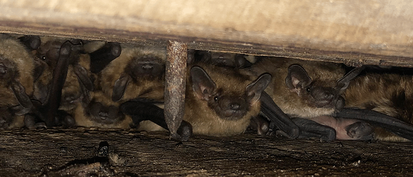
Bats: The bats roosting in the barn gave us fits as they would not leave us
alone, leaving fresh poop on the new floor by day…but catching mosquitoes by
night. I estimate at least 100 were roosting during the day in the barn. My war
with them started by hanging moth ball bags adjacent to where they would roost.
Some left, but not all. The poop on the new floor was a pretty easy gauge as to
how the battle was going. When that didn't do trick, and with less than two
months remaining before the wedding reception, I changed tactics and started
blocking off the roosting area. I left them an opening of 3" to get in/out of
where they were roosting…but less poop ending up on the floor as a result. This
ultimately did the trick and the pooping party was down to a trickle by
mid-September. Eventually, it seems they all have left. We'll see what next year
brings!
One of our unexpected challenges during the summer of 2021 was an onslaught of
two insects—Gypsy moth and Japanese beetle. I discovered the gypsy moth problem
one Sunday while on a walk in early June. That was good timing, otherwise they
would have cleaned off all of our Red Oak leaves. We sprayed the next week and
while we lost several dozen trees and maybe 30% of the leaf matter in that
planting, we were able to kill the bugs with a quick application of Sevin. Then,
about 8 weeks later, while mowing (which we do at least once a month) I started
seeing Japanese beetles, on hazelnuts, Black Walnut and Red Oak. We mixed up a
systemic insecticide, Province II, and sprayed again. Sustained some damage but
killed the beetles before they could defoliate more than 10-15% of the new
leaves. The thing I would note here is that regular scouting is very important.
These insect infestations and resulting damage can come on you as 'a thief in
the night' and cause significant damage. The mindset I needed to overcome is
that planting natives in a forest setting is a relatively safe endeavor. Not
entirely so—exotic pests are present and can turn that theory on its head.
Little done this year to improve hunting opportunities. I basically neglected
the food plots when I saw some seed germinating from the prior year turnips…that
turned out to be ill-advised and the plots didn't work really at all as they
didn't come up thick. One positive on that front was fall seeding switch grass
in a 2.25 acre area. This came up very slow due to drought in May and June of
2021. I sprayed 2,4D to kill broadleaves in May and finally in August I started
seeing some new grass emerge. It looks like a pretty good stand and should
provide some good bedding and fawning areas going forward. This was planted in a
scattered White Pine savannah and should be as beautiful as functional in years
to come…I hope.
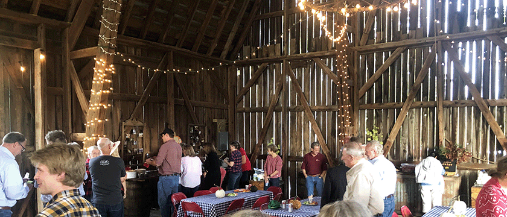
The time and effort invested into barn improvements was spurred by two important
events—the wedding of our neighbors on the 18th of September as well as a big
shindig birthday bash planned for the 2nd of October. The occasion was my 60th.
A group of about 60 people celebrated with a pig roast and folk music band on
the 2nd. Equally, we enjoyed a hearty breakfast and worship service the next day
in the barn.
Seed Collection: Every season and specific climactic condition has its own
advantages and disadvantages for pollination and resulting seed production. This
year was actually quite good for seed production in Michigan. The many frost
events during the second week in May (and some before and after) knocked out
some pollination but this year we are collecting many species that are either
intermittent in their fruit-set or haven't successfully fruited lately. On the
property we collected copious amounts of White Cedar, Hophornbeam, Red Raspberry
and Norway Spruce. At our main farm here in Holland we collected; Hemlock, Black
Gum, Black Elderberry, New Jersey Tea, Red Osier Dogwood, Pagoda Dogwood, Yellow
Birch, Red Maple, Sugar Maple, Dwarf Bush Honeysuckle, Native Spireas. Most of
these are having good to banner years of seed/fruit production.
Fertilization: In August I decided to fertilize differently for 2021. Instead of
broadcast application via a 3 point spreader system on the tractor, we did a
micro-application system…so instead of more than 3000 lbs of fertilizer applied,
we put down about 600#. We applied it by hand and just threw about 2-3 ounces of
material (19-19-19) spread out over 3-4 square feet around the base of each
tree. This actually went pretty fast. One person can carry 10-15 lbs at a time
in a bucket…and while walking, throw one handful near the base of each
tree…basically not breaking stride. It took less than 2 days to go over the 15
acres planted. The benefit of this is that we were not feeding the grass and
forbs…rather concentrated the benefit on the trees planted. This should be done
several times a year but we never quite seem to have enough time early in the
early growing season, so we do it when we can.
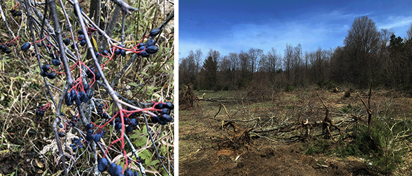
Tree tubes: There was a big wind storm in mid-December in Michigan. Around
1000 of our 7000 tubes blew down with the trees inside during it.
Substantial work ensued to right them but happily without substantial damage
to the trees as they are flexible enough to bend and not break. What is
happening in the 3rd year/summer is that the oak stakes are rotting under
the shredded bark. When a strong wind comes they crack off at the rotting
point and the weight of the stake pulls the tree over. Of course, this is
aided by the plant not being able to produce a strong stem due to that
wind-whipping action not being allowed to take place. In the tube there is
little movement…and little rigidity is the result. My conclusion from this
phenomenon is that really you are better off not buying wood and instead
staking with a 6' fiberglass stake. It won't rot and it will allow for more
wind movement to strengthen the stem of the plant. The fiberglass stake
could be put in the tube instead of outside of it and no attachment system
(securing the tube to the stake by some means) would be necessary. I'm sure
that some tubes could still fly off that way in a very strong wind but not
many since the shredded bark exerts pressure on the tube at the bottom of
the plant. The second thing we are observing at this point is that many of
the taller Black Cherries are in fact strong enough to stay upright now
without a stake. We removed zipties from about half of that species this
fall, so the breaking stake would in fact not topple the plant. As expected,
we will need to go back in and re-ziptie about 5-10% as they're in fact not
ready to stand without the stake…but at least we won't be re-installing new
stakes to the plants that can now hold their own against the wind…but will
still benefit from the tubes protection for a few years. All in all, it
looks like the tubes will stay on most trees for a total of 6-7 years. This
will continue to protect from rodent girdling and from bucks rubbing on
their bark.
So, now it's January 8, the year of our Lord, 2022 as was the standard way
of referring to time--not very long ago. We've shifted into timber
improvement mode again. Covid hasn't affected us seemingly at all for which
we thank Almighty God. Most of our masks are now tucked away and we are
largely back to living as usual.
Three of us go up to the property (150 mile drive one way) once every other
week for 3-4 days. The process of cutting and trimming continues to improve
timber…cutting out inferior plants, felling dead and hung up trees, removing
good species with poor form, cutting out less desirable species or just
thinning good trees caused by just way too many of them growing together.
Our goal is to achieve an eventual spacing of one high quality tree growing
on a 20 x 25' area. That's a process of course. Once the true "competition"
is eliminated, I plan to let the forest floor grow up and improve habitat
for birds and mammals. We are also planting in some evergreens, scattered
about as an understory…creating a bedding area for the deer, etc.
Rough guess is that if 55% of our property is wooded from before our
plantings, that we have made it through maybe half to 60% of that area now,
with our attempts to improve the timber.
So, that's all for now on the updates. I hope you enjoyed it, maybe learned
from it and if you want to drop me a line with your comments…just send one
to info@alphanurseries.com. I will always appreciate hearing from you!!
BEAR LAKE PROJECT — Manistee County, Michigan
March 1, 2020
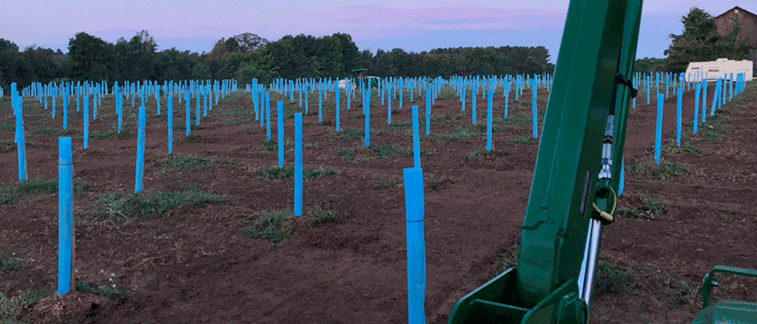
Like many of you, I have been planting trees and shrubs for
a very long time. For me this has almost always been in the
context of a production nursery, with all the benefits of
irrigation and professional care. In my capacity as a
wholesale nurseryman, I am often asked to describe the best
plan and techniques for planting our seedlings on sites that
are quite different than in a nursery. Though I feel
reasonably qualified to address these questions, I decided
to try my own prescription at an 80 acre parcel we own near
Bear Lake—about 150 miles north of our hometown, Holland.
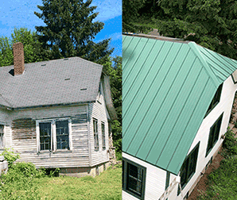
We bought the property in May of 2017. The first order of
business was to restore the house, which had been derelict
for about 40 years. We started with evicting the
squatters--raccoons and red squirrels--and then proceeded to
do a complete renovation...to use it as a base of operations
for our work on the property. This was pretty much complete
at the end of August of the same year. (At this time, we
have yet to do anything to improve the wooden barn, but that
is on the agenda for the coming year.)
Our overall objective is to use the property for rest and
recreation--the latter being to improve the quality of deer
hunting. There are about 25 acres of primarily Sugar Maple,
which was thinned about 8 years ago and is about a 40 year
average age. Mixed woods (not high quality lumber) cover
another 25 acres.
The road (north) side of the property (about 15 acres) was
cleared about 80 years ago and produced mint, corn and hay
in its day. Over the last 40 years, the productive ground
grew back into native annual and perennial grasses as well
as bromes, native forbs and an invasive broadleaf--knapweed.
There were also some volunteer apple trees that the deer had
kept browsed down to 30" and less. Autumn Olive was largely
confined to the tree lines and openings in the forest. I
noted that whatever birds fed on Autumn Olive berries, they
certainly preferred to roost in native Black Cherries. Lots
of Autumn Olive present under them--or I should say, were.
Our reason for the control of Autumn Olive is that it is
very invasive and should be eradicated because it offsets
native plants that provide better food and habitat for
native insects, birds and mammals. Our practice is to cut
the shrubs down an inch or two above ground level and then
"paint" (we use a paint brush for this--hence the name) the
stump with undiluted "RoundUp" (Glyphosate), which has
proven to be a nearly 100% effective treatment. 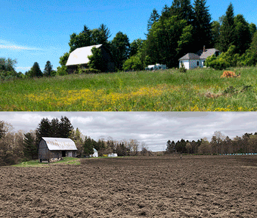
We did a lot of this in the fall of 2017, summer/fall of
2018 and the problem is largely under control now. We began
replanting some of the open areas and glades with native
shrubs such as (100) American Plum and (500) American
Hazelnut. The Hazelnuts have a dual purpose in feeding the
wildlife and giving us a seed source for our seedling
production in the nursery. For kicks I planted out 25
Persimmon but they all died at least down to the ground
after the first winter.
The first seedlings planted were covered with a 60" plastic
vented tube and staked with a 3/8" fiberglass stake. Planted
on 8 foot centers, these were really too close for us to
maintain well with our 5000 series John Deere.
Spring of 2019 we planted out (500) Dolgo Crabapple (not
native, but not invasive) to produce a food plot for the
deer and second, to give us a seed collection site for our
own production in the nursery. These were planted on 10 foot
centers and covered with a 54" non-ventilated plastic tube,
supported by a 3/4" oak stake with a point. We had these
made for us locally. I planted alfalfa in the Crabapple area
the fall before, to draw the deer in while the crabs were
establishing. In my haste I didn't take a season to prep the
site and the vetch and perennial grass returned with a
vengeance the summer after the crabs were planted. I lost
almost all the alfalfa. We kept the weeds largely in check
by mowing and weed-whacking, but that was a battle. In spite
of this, some of the Crabs were growing out of the tube by
the end of the first season, planted out as 18" tree
seedlings.
In March of 2019, I had an epiphany of sorts and decided to
plant 12 acres into hardwoods for the production of high
quality timber and hopefully in time, some veneer logs. When
we finished our spring shipping, we could finally leave the
nursery and get to the property to begin prepping the field
for planting. It took quite a few trips over the field, but
I finally got the sod broken down enough that we could plant
the soil. After three trips and 5 days of planting spread
over 17 days, we finished before May 25th…which was later
than I'd suggest to anyone else!! We did it old school,
pulled a string across the field and dug each hole with the
spade. We planted 2000 Black Walnut, 2500 Black Cherry and
500 Tulip Poplar on 10 foot centers. The Walnuts went into
the better ground, which was a bit lower and heavier. The
average size of the Walnut seedlings was 24-30". The Black
Cherry went on the somewhat higher ground and that was a bit
lighter, some was quite sandy. These were some nice 1-0
seedlings, 3-4' tall. They germinated too sparsely in our
beds for normal production size/quality, but they were great
for this application. The last area to be planted was the
Tulip Poplar. I wasn't going to use this species but a
customer told me that they use a lot of them in their
specialty wood products, so I thought I'd give it a try. I
know that if they can handle the northern exposures, they'll
be very fast and I'll be able to appreciate a fast growing
tree in retirement! One concern that gave me pause was that
the natural range (from what I know) stops about 100 miles
south of this property. I thought I'd give it a try anyway
as the seed was gathered from the northern most part of the
range of the species. So far, so good—we'll see how they
made it through their first winter in May of 2020.
After planting, we protected each of the plants with the 54"
tube, the same as mentioned before with the crabapples. We
didn't know how much the deer herd was going to nibble our
planting, so we took the path of caution and applied the
tubes. The tube is comprised of two pieces. There is a stiff
transparent plastic inner core which needs to be rolled up
and then that is inserted into a lighter plastic sleeve. As
the hard material unfurls, it supports the lighter outer
cover, which is UV resistant. Our tubes cost $1.90
each--which is the cheapest I could find on the market. The
60" stake cost $0.75 each, custom sawn at a local mill. We
used two zipties to secure the tree tube to the stake. The
zipties were stapled to the stake to keep them at the
applied height. After the stakes and tubes were installed,
we brought in 150 cubic yards of rough shredded bark
(purchased at $11.00 per yard delivered) for the 5500
plants. (about $0.35 each in material) That computes to one
yard per +/- 32 trees. Since we were not going to be on site
to care for the planting, we thought it best to buy some
insurance, so to speak, and mulching each plant was the best
way we were aware of. This covered about 18" in diameter
around the tree 4" deep.
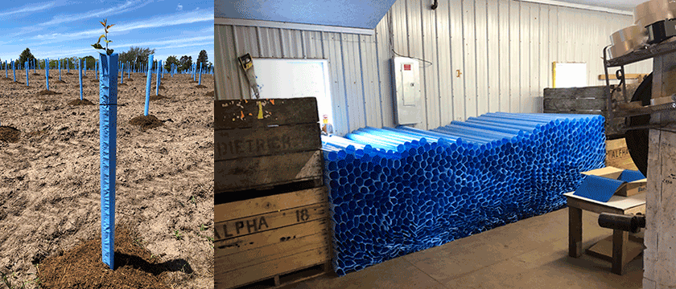
We have a three point hitch working platform (7' x 10') that
we used to move the mulch through the field. We could load
about 3-4 yards per trip. One driver and two men with
pitchforks made quick work of the project. The observed
benefits of the mulch are: 1.) better moisture retention in
the root zone, 2.) cooler soil temperatures in the root zone
resulting in better growth and 3.) the suppression of weeds
immediately next to the trees reducing competition for
resources. I would say that it was money well spent and may
consider doing it again this spring.
Not including labor, I figured we have about $4.00 into each
planted tree.--seedling cost, tube, stake, zipties and
mulch.
After finishing the planting operation, we saw a developing
weed problem and began to light disc the field in both
directions. We did this several times till early July.
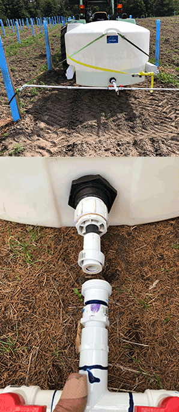
We realized that there would be weeks if not longer, when we
might have drought so I bought a 400 gallon tank and had a
welder rig up a three point fork system to put it on. We
built a distribution (PVC pipe) system that went out the
back of the tank and then out so we could water two trees at
the same time while the operator stayed on the tractor.
(It's very important that trees be planted square to make
this work!) We applied a flexible rubber pipe for the last
12", which helped us to move past plants that were planted
not precisely...to keep from knocking over the tubes. We
calibrated the application rate to 1 gallon applied in 45
seconds. When finished, the driver would move 10' ahead to
the next plant. We watered the plants 3 times over the
summer. The plants stayed in a good growth mode through the
season and never seemed to go into stress.
I was overseas visiting my in-laws and ministry partners for
3 weeks in July. On coming back to the planting, I found
that the weeds and trees were doing very well. The
lambsquarter weeds were 5 feet tall in spots and the
perennial grass was running wild. I bought an 84" 3 point
rototiller and began to beat it back...and did that several
times over a three week period. At the same time, I had the
guys spraying RoundUp around the bark. I should note that a
nice dividend of the tree tubes was that you don't need to
shield the trees when spraying--they were well protected
from the chemical by them!
In late August, I was conferring with our agronomist about
what to re-plant into the area between rows and he suggested
a low growing grass mix that they use in blueberries--a
"center" mix. I planted half the field in that and half the
field in alfalfa. They both came up well. I'm not sure how
much trouble we'll have with perennial grass going forward
but I expect that between mowing and spot spraying, we'll
get on top of it. The knapweed scares me a bit more as I
would like to have the native broadleaves (forbs) come
back--so I can't just go in with 2,4D everywhere. Knapweed
is biennial from what I've read, so that one's going to take
some special effort to stay ahead of.
By the end of the summer, our largest Cherries were 8' tall,
largest Walnuts 5' and largest Tulip Poplar were 5'.
I fertilized the project with a 19-19-19 fertilizer in
September...will probably do that annually for a number of
years.
Going forward, I anticipate pruning the lower limbs off the
trees to produce a clear log. I'm not sure, but thinking
that this will start in year four of the planting. I have a
man-lift in the nursery and hope we can eventually have
"clear" wood up to 25'. I'm a novice here, but the plan is
to take off a little side branching each year or two so the
plant still can grow vigorously—cut off too much, too soon
and I expect a weakened plant will result.
One question I haven't resolved yet is how quickly we should
remove the tree tubes. I've heard some people say that after
2-3 years, you should remove them and another highly
respected opinion is let the trees nearly fill the tubes
(about 4" diameter) and then remove them.
Now back to the deer food plots: For annual/perennial food
plots, we disced up about 4 acres of (mostly) fallow ground
in the extreme back of the property, and tried to beat the
grasses into submission—summer of 2017 and 1018. I sprayed
Round Up a couple times but the control of perennial grass
in this area is still an issue. Spring of 2018, I planted 3
acres into corn, using a Roundup Ready mix--corn grew great
but the deer never went after it. All fall and winter, the
deer would walk through it but it never caught on. The
spring of 2019 I disced it in once or twice before a blown
hydraulic valve and worn clutch put the tractor out of
commission. That turned out for the better though as the
deer thought it was the greatest thing ever once it was
disced down. Why? I have no idea. I talked to another hunter
who ran an experiment with part of the field in RoundUp
Ready (gene modified) corn and part with traditional corn.
He said the deer on that property would only eat the
non-modified corn. I'm not 100% sure of this...don't want to
draw too many conclusions, but it is worth noting. In
September of 2019, I planted out a mix of soybeans, radishes
and beets. This brought the deer in but not like it was a
gold mine. Always something to learn.
That brings us to the end of this chapter. I will update as
I can but I expect we'll be busy on the project most of the
time. I hope you found this information both interesting and
helpful. I've enjoyed this experience of tending God's
garden…of which we are all a steward, not owners—doesn't
matter whose name is on the deed. Write me with any
questions or observations and I'll do my best to my respond.
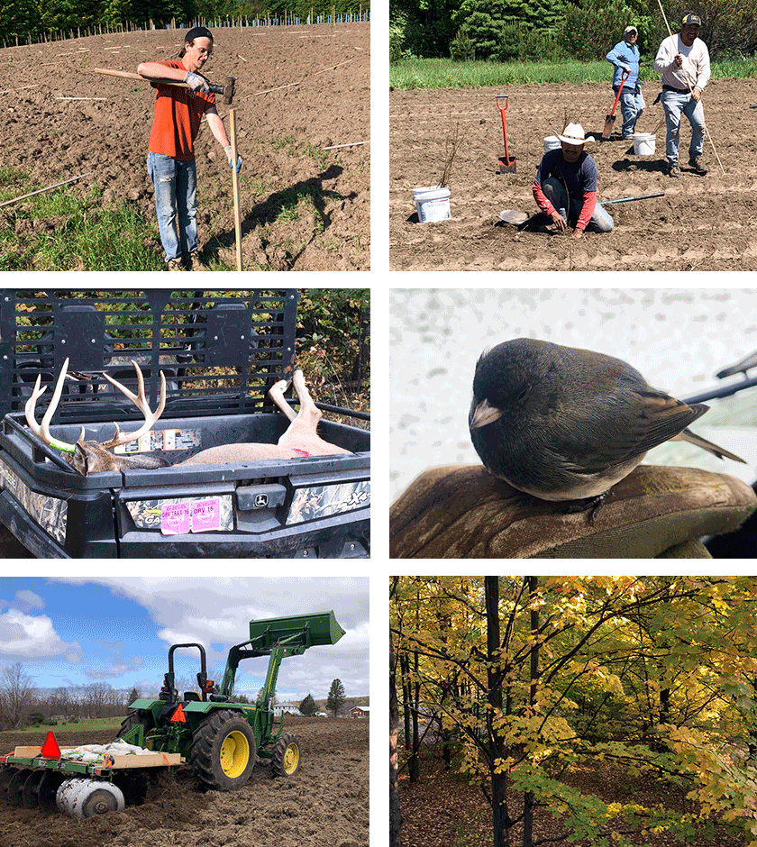
|